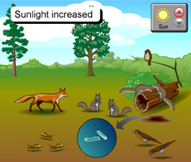
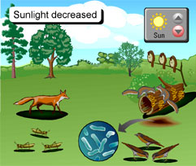

Now that you have made predictions about the effects of increased and decreased sunlight in the Pennsylvania forest ecosystem, you can compare your predictions to the probable results. When you have finished studying these results below, scroll down to answer the question.
|  |
 |
INCREASED SUNLIGHT: Extremely harsh sunny weather
- Increased sunlight causes the death of maples and dogwoods that are shade-loving trees.
- The population of grasshoppers would decrease due to less food in the form of tree seedlings. This in turn means less food for robins and sparrows.
- The squirrel population would remain constant since acorns would be available.
- Fox population would decrease as the amount of prey decreased.
- Decomposers like bacteria and fungi decrease in numbers since they do not tolerate intense UV radiation.
- Bacteria will form dormant airborne spores and fungi airborne spores.
|
DECREASED SUNLIGHT: Continual cloud cover with minimal sunlight penetration
- Decreasing sunlight favors the growth of pines, maples, and dogwoods that can tolerate less light for photosynthesis. This in turn means more tree seedlings for the grasshopper, and therefore more food for robins and sparrows.
- The squirrel population would decrease due to less nut allowance.
- Fox population would stay the same since birds have increased, even though squirrels have decreased.
- Bacteria and fungi would flourish on the dead leaf and tree trunk litter.
|
1. Which organisms had the most dramatic increase or decrease? Explain for each condition.
Return to page 1 to study another abiotic factor, or, if you have studied all three abiotic factors, answer the final activity questions on page 1.